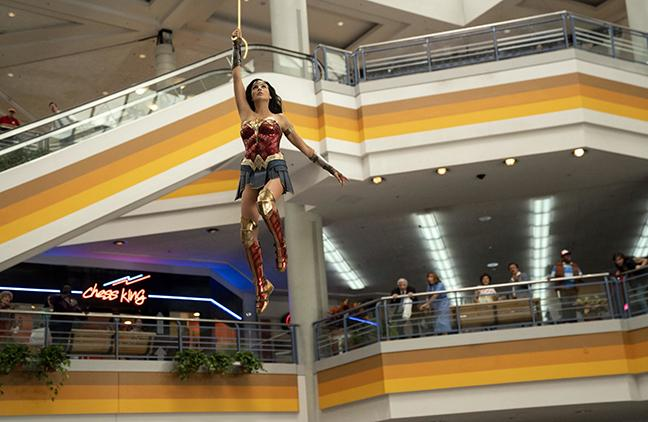

Последний богатырь: Корень зла Новые приключения Ивана и его коллег-богатырей, которым надо спасти Белогорье от нашествия злобных ведьм. К компании присоединяется безбашенный Колобок, а Иван ревнует Василису к Финисту - Ясному соколу.
Чудо-женщина: 1984 год. Чудо-женщина Диана Принс работает в Смитсоновском институте специалистом по социальной антропологии и археологии, когда на работе нечаянно умудряется подержать в руках камень, исполняющий желания. У Дианы всего одна мечта — вернуть к жизни Стива Тервора, погибшего в годы Второй мировой войны. И она исполняется. Правда, оказывается, что у артефакта есть неприятный побочный эффект, а еще за ним охотится неудачливый, но амбициозный бизнесмен Максвелл Лорд. 1984
Энциклопедия сериалов DC. От «Флэша» и «Стрелы» до «Рокового патруля»
«Кинотеатры не маршрутка!»: Владельцы кинозалов заявили о несправедливом отношении к их бизнесу»